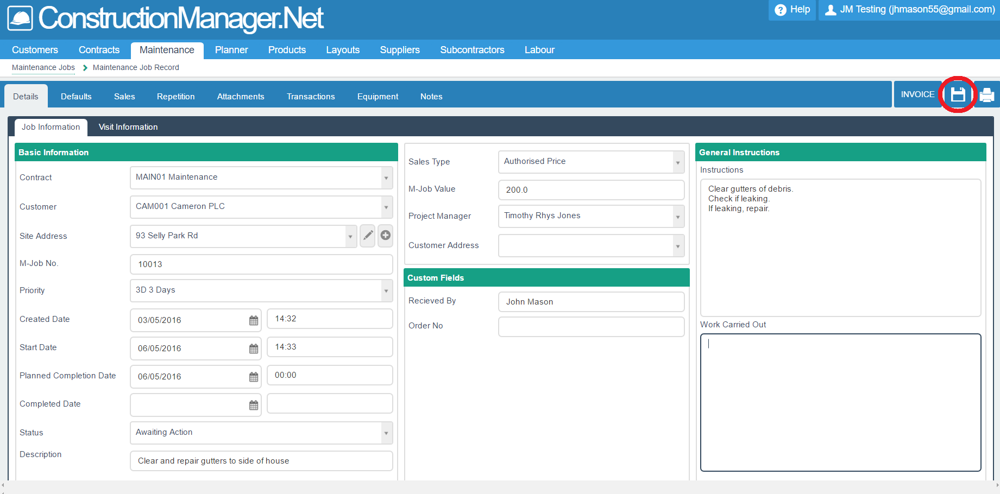

This module enables you to create, modify and monitor your maintenance jobs.
Contents
Introduction
The Maintenance module has been designed to provide additional functionality for small maintenance types of work.
For example:
- Producing job cards and instructions for workers, optionally via mobile phones
- Tracking job times and status of jobs
- Storing many site addresses which are used repeatedly
- Different job types, e.g.
- Cost plus markup
- Authorised price
- Schedule of rates
- Product invoice
- Quote invoice
- Automating sales invoicing, e.g.
- Preview list of jobs to invoice
- One invoice per job
- Many jobs on one invoice
Maintenance Jobs
To access Maintenance, select the Maintenance>Maintenance Jobs tab on the main menu.
This will open the following screen:
This displays a list of all maintenance jobs on your system.
The list can be manipulated in the usual way - see Manipulating Lists..
New Maintenance Job
To create a new job, click on the New button.
This will open the following screen, under the details>job information tab:.
This data is used by the office, rather than the on-site engineer.

Data to be entered includes:
- Contract: Select a contract no. from the drop down box.
Typically, you will create an "umbrella" contract no. for all small maintenance jobs,
or one contract for all maintenance jobs for one (larger) customer.
- Customer: Select a customer from the drop down box of Sage customers.
- Site address: Select a site address from the drop down box.
You can create a new address here.
- M-job no.: This is auto-created by the system.
The starting point and format of the job no.s can be set up in (old) Construction Manager,
under Settings>Maintenance Settings>Maintenance Job No..
- Priority: Select a priority from the drop down box.
These codes can be setup in (old) Construction Manager,
under Settings>Maintenance Settings>Priorities.
- Create date & time: This defaults to today and now, but you can update it.
- Start date & time: This defaults to current date/time plus the priority time, but you can update it.
- Planned completion date & time: Enter the planned completion date & time.
- Completion date & time: Enter the actual completion date & time.
- Status: Select a status from the drop down box.
- Description: Enter a short job description - this will appear on lists and reports.
- Sales type: Select a sales type from the drop down box.
- M-job value: You can only enter a value here if the sales type was selected as "Authorised Price".
If any other sales types were selected, the value field is protected.
- Project Manager: Select a Project Manager from the drop down box.
The project manager field is maintained in (old) Construction Manager, as a tick box on the list of employees.
- Customer/Branch Address: Select an address from the drop down box.
This is used where a (larger) customer has several branch addresses. It does not relate to the site address.
- Instructions: Enter more detailed instructions about the job.
This may be more detailed than the short description.
- Work Carried Out: This data will be entered when the job is in progress or completed.
It should appear on the sales invoice.
You can then create Visit Information by clicking on the appropriate tab - circled in red above at top left.
This will open the following screen:

On this screen, you can perform the following functions:
- Create visits from a drop down list of engineers.
- Create and update data about visits on the 4 tabs circled in red, top right.
- Create planner appointments by entering planned start and end dates and times,
and clicking the Create Planner Appointment button, circled in red, bottom right.
N.B. In practice, all the data on this screen will be initially created on the Planner module,
and then updated via the Mobile Manager module.